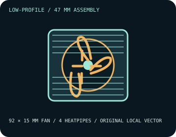

[ INDIVIDUAL COMPONENT // COOLING ]
Thermalright AXP90-X47
47 mm top-flow cooler with four heatpipes and a slim 92 mm PWM fan; the manufacturer does not publish a CPU TDP ceiling for this model.

IDENTIFICATION: The X47 is not the X47 Full Copper variant. Confirm the exact model, fan, hardware revision, and socket kit on the unit before fitting.
Manufacturer specifications
| Overall dimensions | 94.5 × 95 × 47 mm with TL-9015 fan; heatsink alone is 94.5 × 95 × 32 mm. Published assembly weight: 310 g. |
|---|---|
| Fan / thermal limits | TL-9015, 92 × 92 × 15 mm; 2,700 RPM ±10% maximum, 42.58 CFM, 1.33 mm H₂O, 22.4 dBA, 0.18 A, 4-pin PWM. Air cooler; no radiator. Thermalright lists no model-specific TDP limit, so do not infer one from the fan or heatsink dimensions. |
| Mounting kit and sockets | Use the supplied AXP90-X47 mounting hardware and its model-specific guide. Manufacturer lists Intel LGA 115x, 1200, 1700, 1851 and AMD AM4/AM5; verify the exact board and kit revision before installation. |
| Clearance caveats | Reserve at least 47 mm of vertical case clearance and check the 94.5 × 95 mm footprint against tall DIMMs, VRM covers, PCIe cards, and nearby chassis structure. Confirm the case side panel and motherboard-specific compatibility before purchase. |
Safe installation and maintenance
Install only with the socket-specific parts identified in the AXP90-X47 guide. Follow the manufacturer screw sequence and torque guidance; do not reuse a bracket from a visually similar cooler. Disconnect power before service and renew thermal compound if the cooler is lifted.
- Do not treat a claimed CPU power value from a retailer as a manufacturer thermal rating.
- After installation, confirm fan rotation and check CPU temperatures under the intended sustained workload.
Manufacturer sources
- Thermalright — AXP90-X47 product specificationsDimensions, heatsink construction, fan data, and listed socket families.
- Thermalright — AXP90-X47 installation guide (PDF)Manufacturer mounting instructions; match the supplied kit and socket revision.
Static catalog reference only; current product documentation and physical fit take precedence.